Direction Artistique × UI Design
8 ans d'expérience, en groupe média et en environnement produit
Présentation
Profil, philosophie, expertises et process design.
Études de cas
EnVols, Smartch, Autrice, DIOR, APM, Pierre Fabre.
Méthode & impact
Assets, ateliers et adoption, chiffres clés, parcours.
Discutons-en
Ce que je cherche, contact.
Je décline et fais évoluer des identités visuelles sur des écosystèmes digitaux complexes : produits web et mobile, réseaux sociaux, CRM, supports marketing. De la direction artistique au Design System, en collaboration avec les équipes Produit, Marque et Édito.
Un parcours qui combine les deux cultures que réclame ce type de poste : huit ans en groupe média et en agence, puis en environnement produit, aux côtés d'équipes Design System, Édito et Marketing.
années
d'expérience
audience
touchée
temps de
production
Incarner une identité
de marque forte.
Garantir la cohérence visuelle entre tous les points de contact, digitaux et physiques.
Clarifier la prise
de décision.
Rendre lisible la complexité produit, technique et métier pour aligner les équipes.
Servir la performance,
sans trahir la marque.
Optimiser flux et adoption tout en préservant l'exigence graphique.
Direction Artistique
& Identité de marque
Déclinaison et évolution des identités visuelles : assets, iconographie, illustrations, patterns, layouts, templates et guidelines cross-canaux.
UI, Prototypage
& Motion
Interfaces et prototypes interactifs sur Figma, du desktop au mobile. Culture Motion Design et supports narratifs pour défendre une vision créative.
Design System
& cohérence
Maintenance des logos, icon sets et composants graphiques. Cohérence de marque entre produits et canaux, documentation et adoption.
Benchmark des tendances, de la culture visuelle et des codes de marque.
Ateliers de co-conception, cadrage avec les équipes produit et marque.
Identité visuelle, assets, iconographie, patterns et guidelines.
Interfaces, maquettes et prototypes interactifs sur Figma.
Documentation, accompagnement des équipes, adoption des standards.
EnVols
Air France, éditorial
Smartch
Brand System, Motion UX
Autrice
IA, L&D landing
DIOR
Retail performance
APM
Desktop & mobile
Pierre Fabre
Social media, artwork
Conception de la plateforme EnVols : hiérarchiser une offre éditoriale dense tout en intégrant les objectifs de réservation et de monétisation publicitaire, sans rompre l'expérience premium.
Air France
UX / UI Designer
Lead conception plateforme
Média de marque
Web, Print, Social, Newsletter
1M visiteurs/mois
4M pages vues / mois
Renvoyer vers la réservation
Générer des redirections qualifiées vers le tunnel d'achat de billets Air France.
Générer du revenu publicitaire
Intégrer des emplacements publicitaires imposés par la régie.
Sans donner le sentiment d'être vendu
Le tout sans jamais rompre l'expérience éditoriale premium.
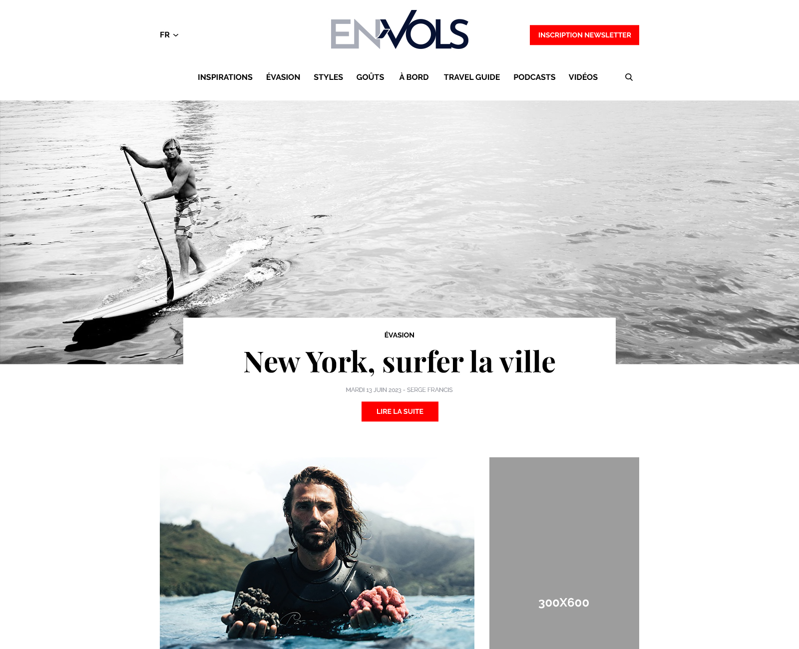
Le projet a consisté à concevoir une architecture éditoriale modulaire capable d'absorber, dans un même langage visuel, les contenus, les CTA de conversion et les espaces publicitaires.
Structurer une offre dense
+100 destinations, en français et en anglais, à hiérarchiser sans perdre l'utilisateur.
Unifier print et digital
Un même langage visuel entre le magazine (150k exemplaires) et la plateforme digitale.
Intégrer sans rupture
Articles, vidéo et audio dans un même parcours, avec un accès permanent à la conversion.
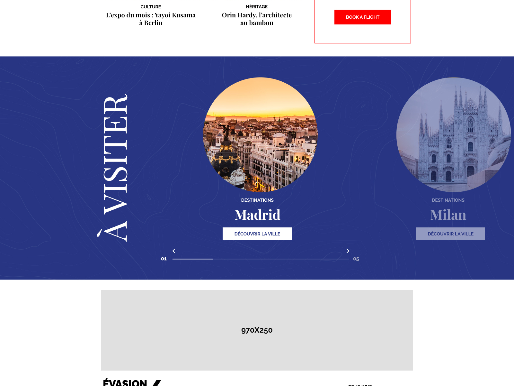
La rubrique phare Travel Guide (contenus produits par Michelin Editions) répond à deux usages : l'utilisateur qui connaît déjà sa destination, et celui qui a besoin d'inspiration via des filtres (Quoi / Où / Quand / Combien).
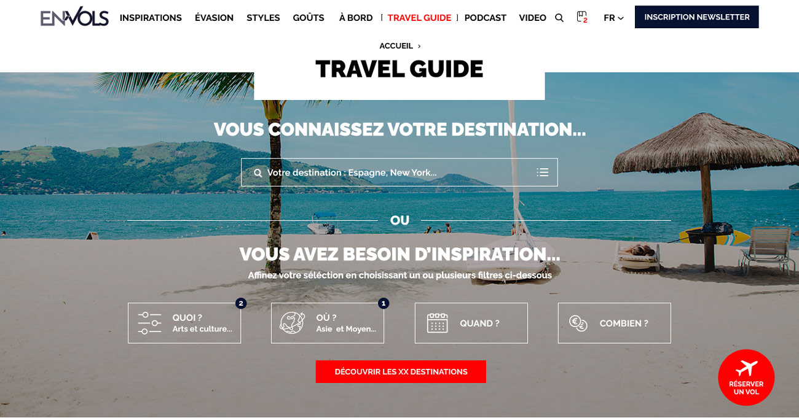
Deux profils, un seul outil
Recherche directe pour qui connaît sa destination, filtres
Quoi / Où / Quand / Combien pour qui a besoin d'inspiration.
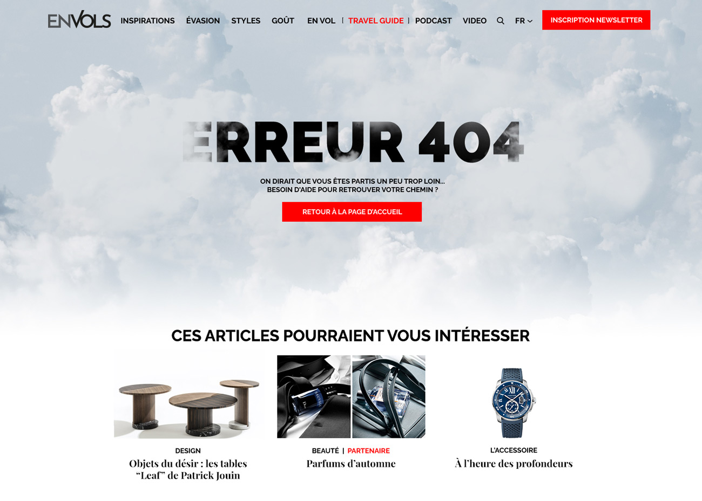
Soigner l'échec aussi : l'état vide reste cohérent avec la marque plutôt que de rompre l'expérience.
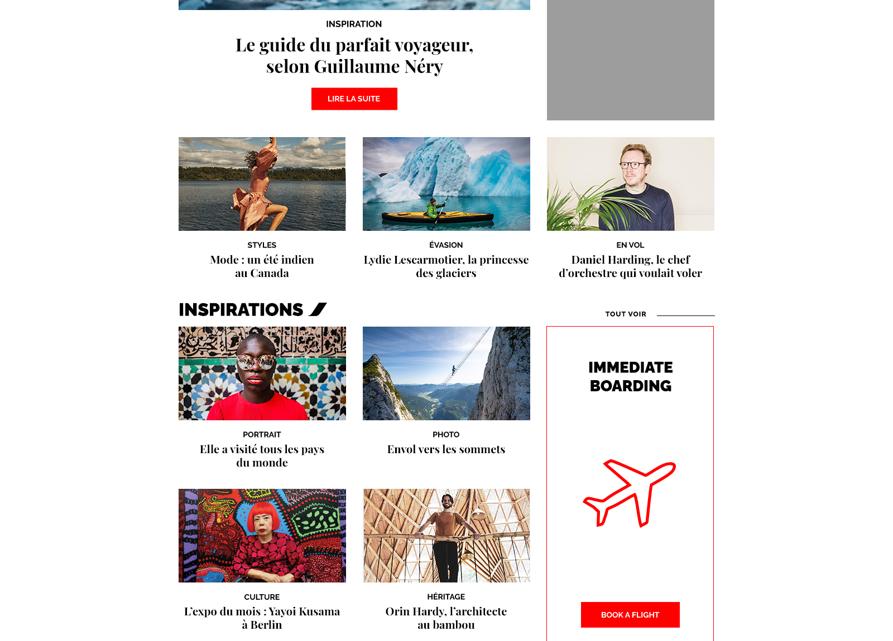
Le widget Immediate Boarding rompt volontairement avec la logique éditoriale pour donner un accès direct à la réservation, sans être vécu comme une interruption publicitaire.
Immediate Boarding
Icône avion, fond contrasté, CTA rouge : identifiable sans être vécu comme une interruption.
CTA de fin d'article
Trois CTA circulaires reliés par un tracé pointillé évoquant un trajet ; celui de réservation reprend la signature du widget d'accueil.
Formats IAB réservés
300x600 et 970x250 intégrés dès la conception de la grille, placés en fin de section pour limiter la rupture de lecture.
Chaque canal alimente l'autre, sans rupture d'expérience : magazine print (150k exemplaires), plateforme digitale, newsletter et réseaux sociaux.
Mobile, consommation rapide
L'UX web favorise la lecture rapide et le scroll court sur mobile.
Desktop, « slow reading »
Une lecture plus longue est permise sur desktop pour maximiser le temps de session.
Un gabarit par rubrique
Évasion, Inspiration, Papilles, Styles : chaque rubrique a son gabarit social, pour rester reconnaissable dans un fil.
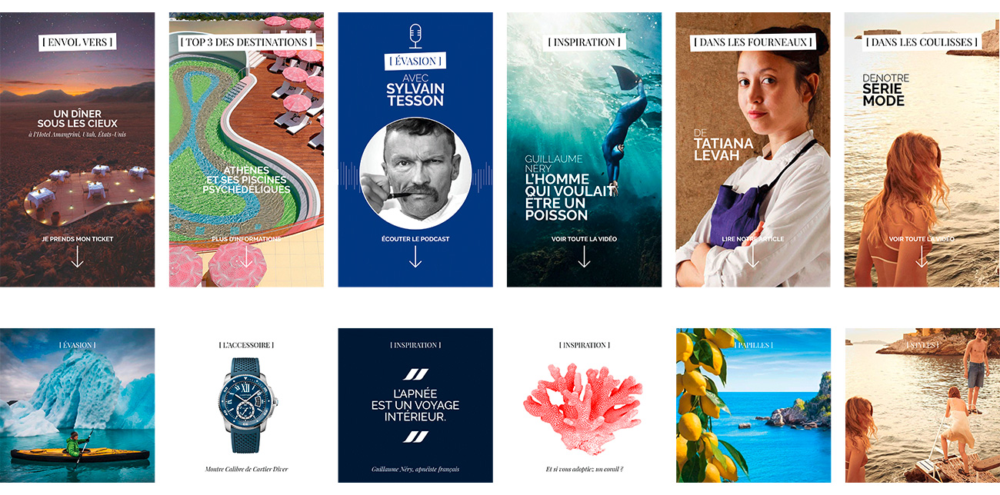
En traitant la conversion et la publicité comme des éléments de grille à part entière plutôt que des ajouts disgracieux, la plateforme reste un média qu'on a envie de lire, pas un tunnel de vente déguisé.
visiteurs uniques
par mois
pages vues
mensuelles
abonnés
à la newsletter
followers sur
les réseaux sociaux
Repenser l'architecture de l'information du site vitrine et créer un Brand System global (Web, Présentations, Social Media) garantissant la cohérence de la marque, tout en optimisant la conversion via un design d'interaction pointu.
Smartch
Agence spécialisée dans le learning et la formation digitale
Product Designer Senior
Architecture, UX/UI, Design d'Interaction
Moderniser l'identité, clarifier l'offre
Fragmentation visuelle
Au-delà du site web, l'agence souffrait d'une fragmentation visuelle sur ses autres points de contact, propositions commerciales, réseaux sociaux.
Manque de dynamisme
L'ancienne interface web manquait de dynamisme et peinait à guider l'utilisateur vers la prise de contact.
Génération de leads
L'interface peinait à convertir la visite en prise de contact.
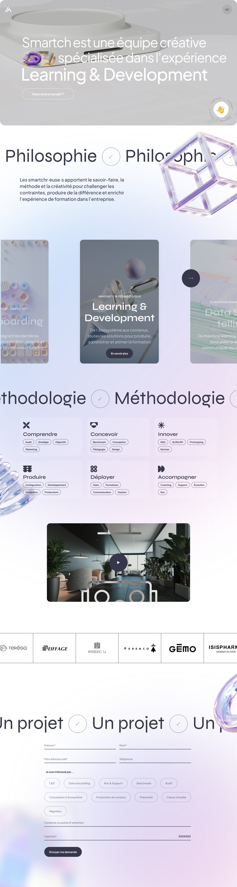
Restructuration complète de l'arborescence et des parcours, pour passer d'un site « plaquette » à une architecture claire et guidée.
Guidage cognitif
Animation séquentielle des icônes et du slider de compétences pour guider la lecture.
Feedback & affordance
Survol magnétique sur les labels du formulaire : un feedback qui réduit la friction perçue.
Ancre persistante
Sticky discrète en bas à droite, raccourci vers le formulaire sans interrompre la lecture.
Pour éviter que cette nouvelle charte graphique ne se dégrade avec le temps, elle a été pensée comme un système modulaire applicable au-delà du produit web.
De l'UI au pitch deck
Traduction des Design Tokens du site web vers des gabarits de présentation : titres, présentation d'équipe, business cases, plannings, mêmes codes visuels.
Templates Social Media
Déclinaison du système via des grilles standardisées, pensées pour absorber différents volumes de texte de manière élégante.
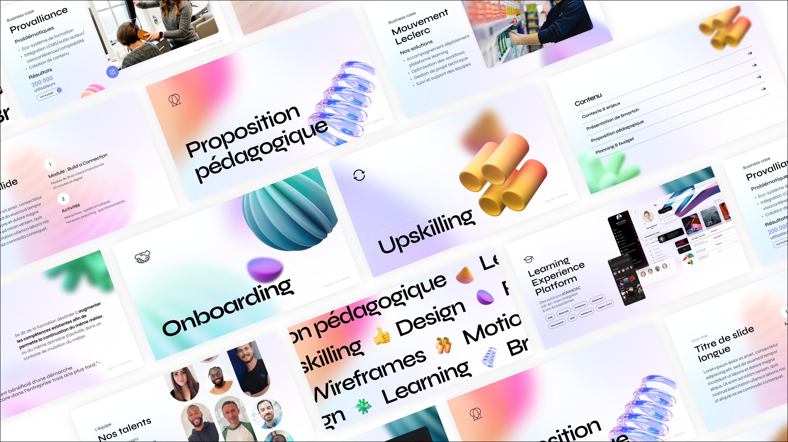
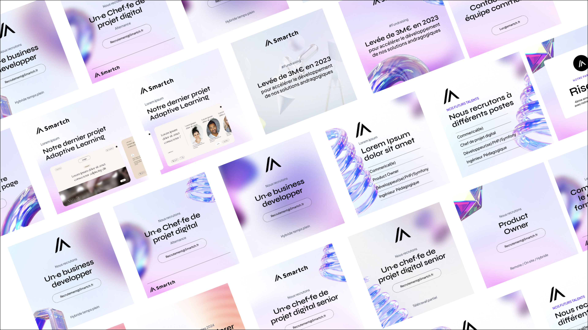
Le système garantit une expérience sans couture pour le client final : de la découverte sur LinkedIn, à l'exploration interactive sur le site web, jusqu'à la réception de la proposition commerciale.
Interactions magnétiques et ancre persistante : un parcours plus organique vers le formulaire de contact.
Les commerciaux génèrent des pitch decks en quelques minutes ; le marketing anime les réseaux sociaux en autonomie.
Une expérience de marque « end-to-end », sans couture entre tous les points de contact.
Concevoir le point d'entrée d'un nouvel outil SaaS de création de formations par IA, en maximisant la génération de leads qualifiés via une structure orientée conversion et une continuité stricte avec le Design System du produit.
Autrice.ai
SaaS B2B, création de parcours de formation par IA
Product Designer
Landing page, architecture de conversion
Confiance, pas prix
Marché B2B sceptique face à l'IA
Le produit
Une solution B2B qui exploite l'IA pour générer et structurer des parcours de formation (L&D).
Le défi d'acquisition
Crainte de la complexité ou de la substitution humaine : le frein est la confiance, pas le prix.
L'enjeu produit
Déconstruire les biais cognitifs liés à l'IA et générer des demandes de test.
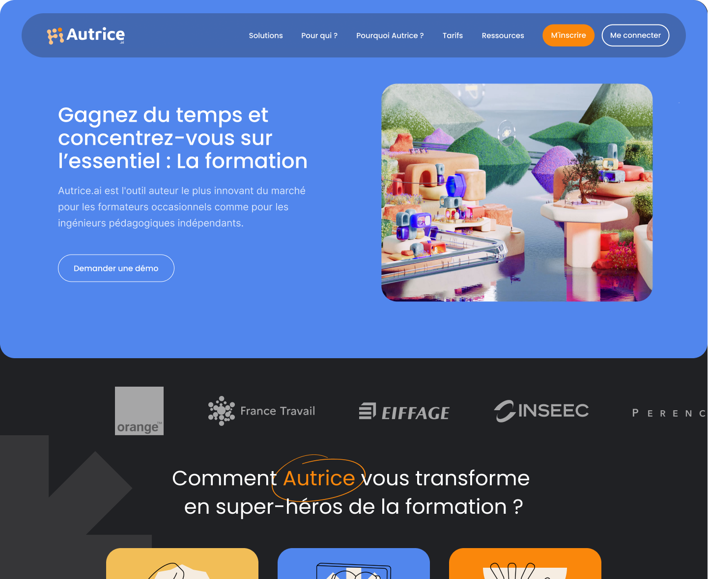
L'approche a consisté à traiter cette page comme une extension du produit lui-même, en appliquant des logiques de divulgation progressive (Progressive Disclosure).
Architecture du funnel
Accroche sur le bénéfice primaire, réassurance immédiate (social proof), puis fonctionnalités en Bento UI pour la scannabilité.
Ancrage cognitif
Équilibre entre abstractions UI et photos d'équipes en collaboration : l'IA positionnée comme un « copilote », pas un remplaçant.
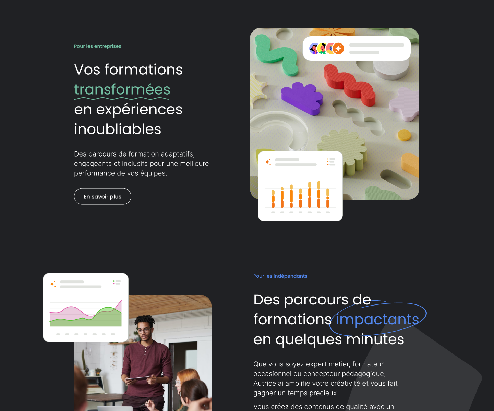
Plutôt qu'une identité visuelle isolée, la landing page a été conçue comme une extension directe du produit SaaS, assurant une cohérence absolue tout au long du parcours.
Héritage des Design Tokens
Palette, hiérarchie typographique, élévations : les mêmes variables produit, la même architecture CSS pour les développeurs.
Parité design / code
Composants hérités de l'interface produit, adaptés en blocs modulaires (Hero, Bento features, FAQ) en CSS Grid et Flexbox.
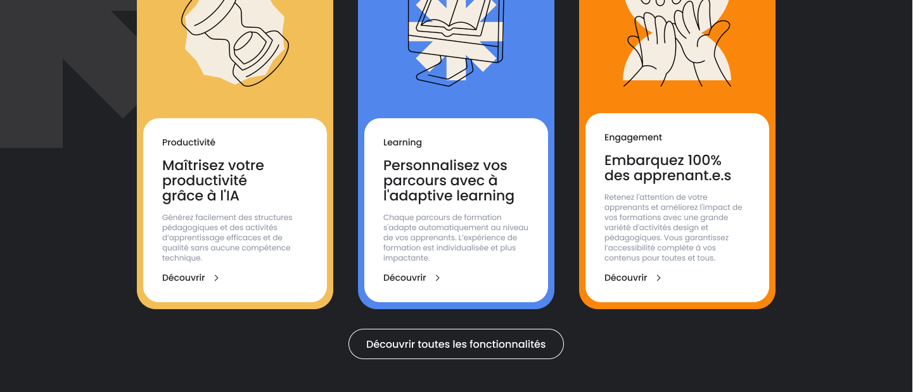
Le même système de composants, décliné pour l'équipe marketing : supports de présentation et contenus réseaux sociaux, sans nouvelle charte à maintenir.
Kits de présentation
Gabarits de slides réutilisant les mêmes codes visuels que le produit et la landing page.
Contenus réseaux sociaux
Déclinaisons modulaires pour l'équipe marketing, cohérentes avec le design system.
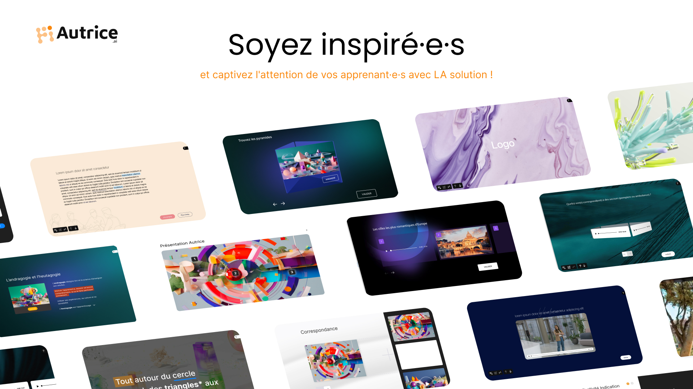
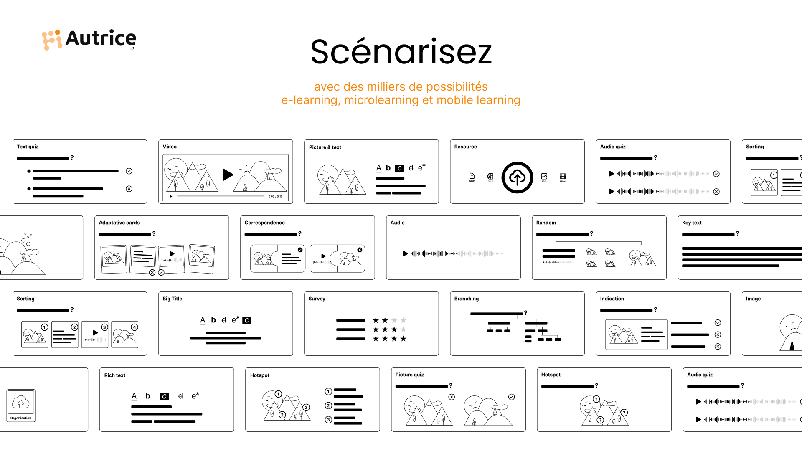
En mutualisant l'architecture visuelle entre le produit et le site marketing, l'équipe technique n'a plus eu à maintenir deux bases de composants distinctes.
Une mise à jour de token se répercute de manière centralisée sur tout l'écosystème.
Moins d'allers-retours au handoff : les développeurs assemblent la page depuis la librairie existante.
Aucune rupture visuelle entre la landing page et l'onboarding produit.
Transformer la plateforme d'apprentissage en un véritable outil de pilotage Retail : sécuriser l'onboarding et redonner le contrôle opérationnel aux managers de zone.
Dior
Product Designer
UX/UI, conception des flux, Design System
Learners, Managers, Admins
Plateforme B2B (LMS) internationale, Beauty Consultants & managers de zone
Tunnel fragmenté
Un tunnel morcelé et des emails non contextualisés : un taux d'abandon élevé.
Erreurs de rattachement
Des rattachements hiérarchiques erronés : conseillers liés au mauvais point de vente.
Managers sans visibilité
Aucun suivi de l'activation des équipes, ni pilotage des accès.
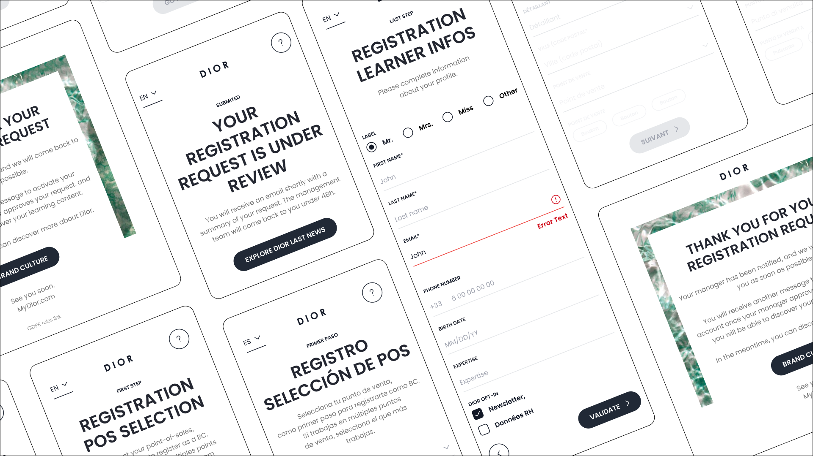
Le rattachement hiérarchique était la source principale des erreurs. Il devient la première étape, en sélection cascade — détaillant, ville et code postal, point de vente — et non plus un champ libre saisi en fin de parcours.
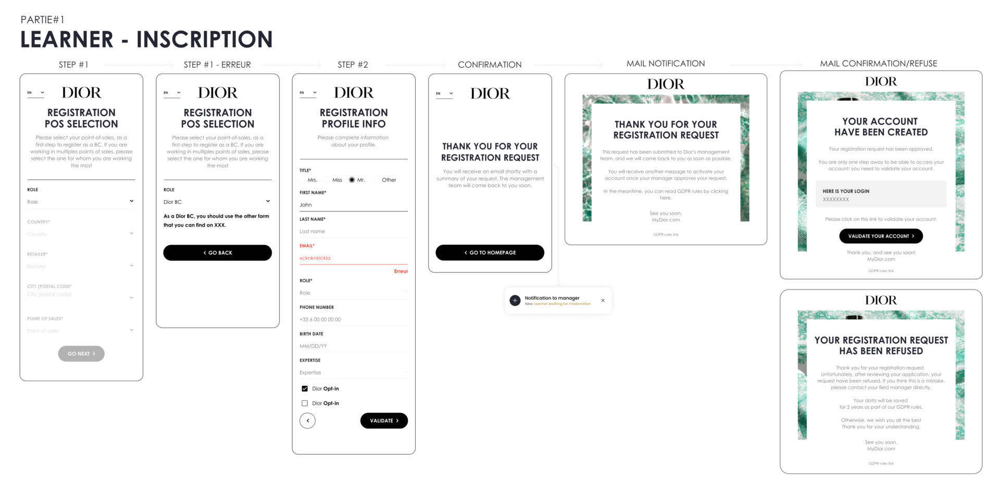
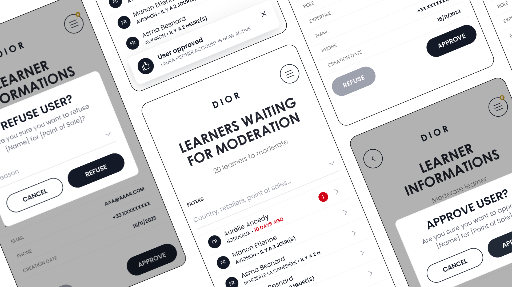
Un tableau de bord strictement opérationnel pour fluidifier la gestion des accès et réduire le temps de traitement administratif.
Priorisation de la donnée
Le dashboard centralise l'état des équipes et isole automatiquement les actions requises (« Learners waiting for moderation »).
Décision en un clic
Des flux de validation, Approuver, Refuser, Réactiver, via des modales contextuelles.
Feedback immédiat
Chaque action génère une confirmation visuelle instantanée, sans rafraîchissement de l'interface.
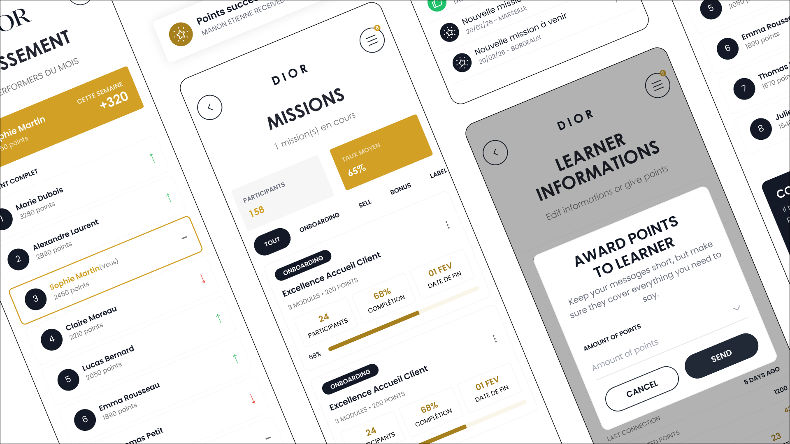
Les Beauty Consultants consultent la plateforme en boutique, sur mobile, par sessions courtes. L'interface est donc pensée en priorité pour l'écran vertical, et non déclinée depuis le desktop.
Une couche d'engagement, en or
Missions, points, taux de complétion et classement mensuel : un accent doré vient qualifier la progression, sans toucher au noir et blanc de la Maison.
Une information par écran
Chaque vue répond à une seule question : où j'en suis, que faire ensuite, où je me situe.
Le manager dans la boucle
L'attribution de points depuis la fiche apprenant relie le pilotage managérial et l'expérience de l'apprenant, dans le même système de composants.
Une base de composants modulaire, rigoureusement alignée sur l'identité digitale de la Maison Dior.
Composants modulaires
Une architecture centralisée qui renforce la cohérence graphique globale de la plateforme.
Scalabilité fluide
Une fondation prête à absorber les futures évolutions produit.
Noir & blanc utilitariste
L'épure iconique de la marque comme levier ergonomique : la donnée métier, statuts, actions, classements, toujours lisible.
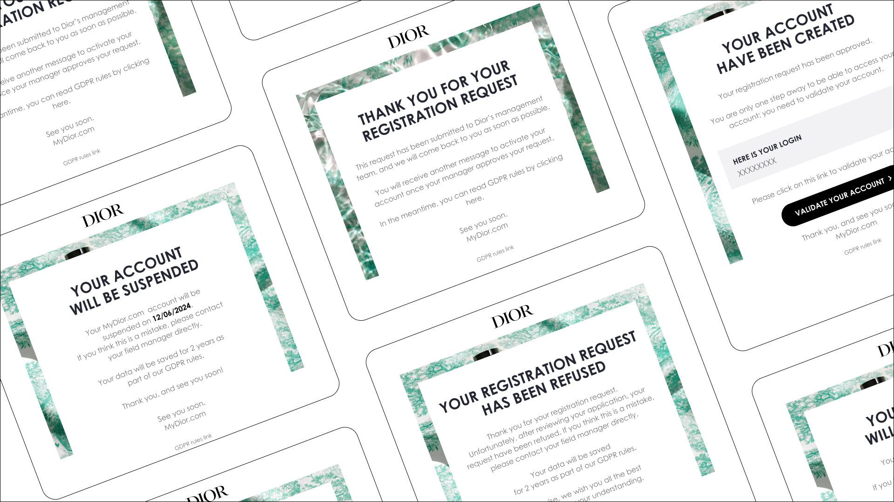
La complexité gommée au profit de l'efficacité opérationnelle. La plateforme est devenue un outil que les équipes veulent utiliser.
de taux d'ouverture des emails
transactionnels, contre 22% au lancement
de temps de traitement
administratif pour les managers
d'engagement hebdomadaire
des apprenants actifs
Réunir dans un même espace l'adhésion, le planning des rencontres, les communautés et les documents contractuels, pour des membres qui ne se connectent que ponctuellement.
APM
Réseau de dirigeants d'entreprise
Product Designer
UI, Design System, responsive
Espace membre
Adhésion, club, planning, communautés
Usage intermittent
Aucun apprentissage de l'outil possible
Ouvrir sur l'action, pas sur le menu
« Mes actions » et « Mes prochaines dates » ouvrent l'accueil : ce qui attend le membre passe avant l'arborescence.
Rendre le contractuel désirable
Contrats et conventions deviennent des cartes à statut explicite, non une liste de pièces jointes.
Une couleur qui porte du sens
Le dégradé de marque distingue les natures d'information, adhésion, club, profil. Il ne décore pas.
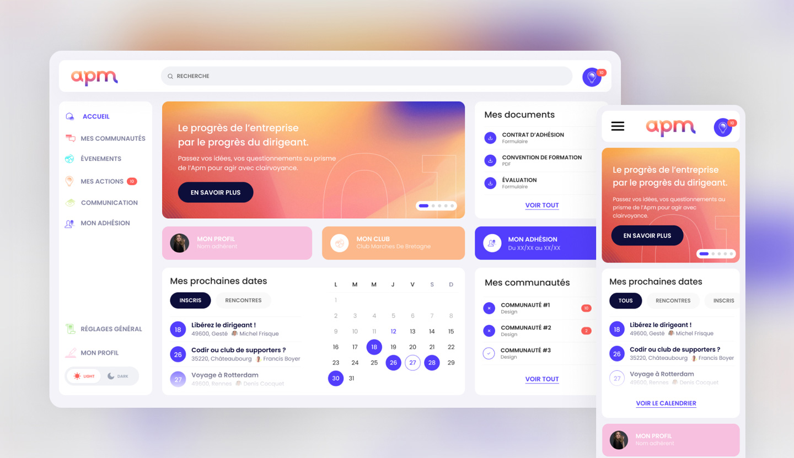
Chaque vue est maquettée en desktop et en mobile en parallèle, à partir des mêmes composants. Le mobile n'est pas une réduction du desktop : la hiérarchie y est rejouée.
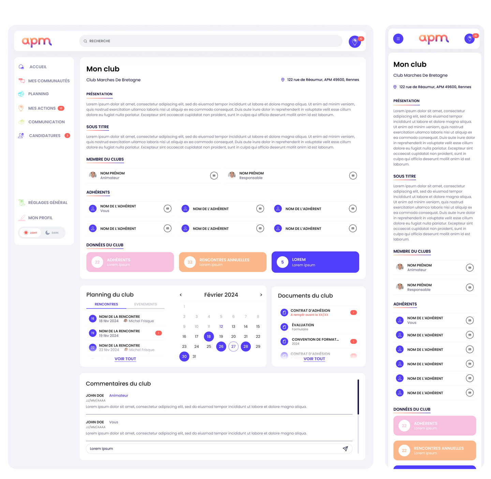
Une pile, pas une colonne écrasée
Les cartes de données se réordonnent verticalement, en gardant leur ordre d'importance.
Navigation escamotable
Le rail latéral devient un menu, la recherche reste accessible en permanence.
Deux thèmes dès la conception
La bascule clair / sombre est traitée en variables de couleur, pas en second jeu de maquettes.
Réponse à un appel d'offre pour l'accompagnement du lancement d'une nouvelle gamme de produits Pierre Fabre sur les réseaux sociaux : une stratégie de contenus diversifiée, mêlant photographie, création graphique et vidéo, pour séduire la communauté.
Direction artistique, création graphique et vidéo.
Deux piliers de contenu, #Care et #Conscious : photographie produit, stories Instagram séquencées, témoignages vidéo d'experts.
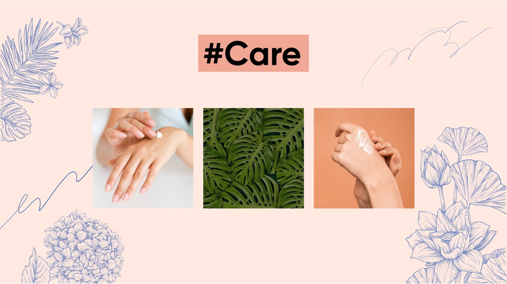
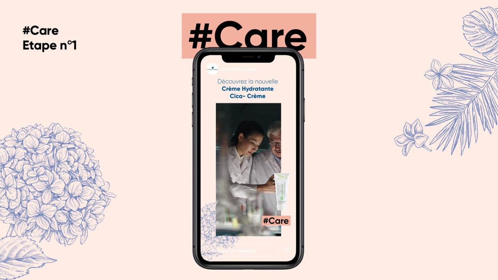
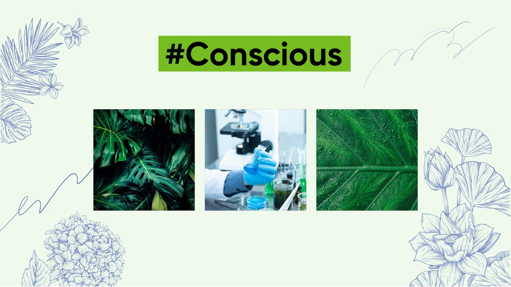
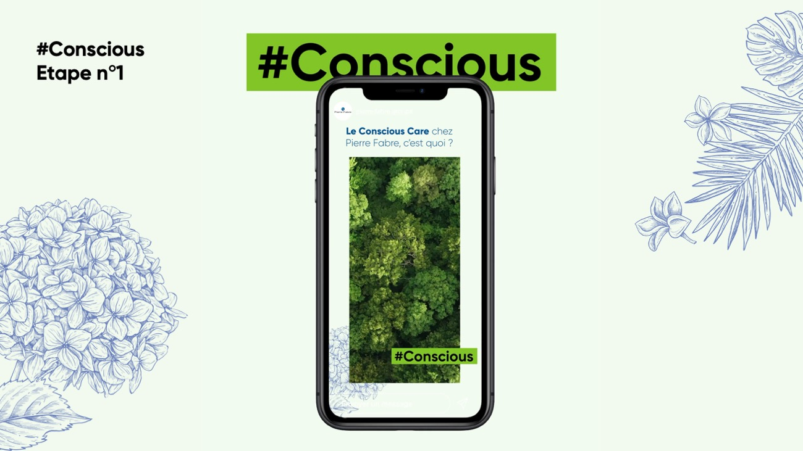
Au-delà des maquettes d'écrans, l'essentiel du travail de marque tient dans les briques qui la rendent reproductible par d'autres. Chaque famille ci-dessous a été produite et maintenue sur les projets présentés.
La partie visible du métier, ce sont les écrans. La partie qui décide de leur survie, c'est ce qui se passe autour : les ateliers où les partis pris se discutent, et la documentation qui permet aux équipes de s'en servir sans moi.
Ateliers de co-conception
Cadrage avec les équipes Produit, Marque et Édito en amont des maquettes : les arbitrages se prennent ensemble, pas en revue de fin de projet.
Défendre un parti pris
Chaque proposition est présentée avec ce qu'elle sert : le widget de réservation d'EnVols, le motion de Smartch ou le noir et blanc de DIOR se justifient par un usage, pas par un goût.
Documenter et transmettre
Règles d'usage, gabarits commentés, accompagnement à la prise en main. Encadrement de 3 designers chez Reworld Media.
Veille continue
Benchmark des tendances et des codes de marque, pour nourrir les propositions plutôt que suivre les modes.
années
d'expérience
marques
accompagnées
audience
touchée
temps
de production
designers
encadrés
Product & Brand Designer Freelance
CMA CGM, SNCF, Betclic, Enedis, Fédération Française de Handball.
Product Designer Senior, Smartch
Safran, Décathlon, FFF, Autrice, DIOR, Orange, SKEMA.
Directeur Artistique Digital, Reworld Media
Encadrement de 3 designers. Air France, Reezocar, Social Playground, Melty.
Digital Designer, Reworld Media
Orange, Leads Lab, Atelier.B, One Experience, Lapeyre.
Epitech Digital School
Produits numériques à forte visibilité, au sein d'une équipe Design structurée : Design System, accessibilité, UX Writing, Artwork, DesignOps.
Un rôle réellement hybride, moitié Direction Artistique, moitié UI, aux côtés du Lead Brand Design et des équipes Produit.
Faire vivre une identité cohérente du web au mobile, du CRM au social, et outiller les équipes pour qu'elle tienne dans le temps.